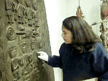

|
|
Internships |
| The Minneapolis Institute of Arts offers many volunteer
internships for individuals considering or pursuing careers in museum work.
All candidates with skills, interests, or experiences relevant to museum
work are eligible.
" My internship is unique in that it has given me the opportunity to explore firsthand, a career field that I am interested in. I have a lot of responsibilities here that I wouldn't have elsewhere, such as making important decisions about the reinstallation of the African Art Gallery. In addition to learning from and working with the very knowledgeable staff, I get to handle objects, and write label text that will eventually be read by the public. Here, I don't feel like "just an intern," but like I have a real job that means something and is important to the whole museum." Kyan Celise Thornton Internships may range from one to twelve months in length, with a minimum time commitment of twenty hours per week expected. Intern positions are typically project-oriented within a specific department. A frequent classroom component acquaints interns with various functions, programs, departments, and staff of the museum and/or relate to the intern experience. Students often arrange academic credit for their experience through their college or university. The availability of internships is determined by the needs of individual departments throughout the year, within the limitations of staff and space availability, exhibition schedules and the varying potential for challenging intern projects. Candidates may consider internships in several areas of the museum, including the Curatorial, Education, Marketing and Communications, and Development Divisions. Interns are placed three times each year. The application deadlines are the first of October(winter/spring internships), March(summer internships), and June(fall/winter internships). The application materials required are: the completed application form and essay, a recent résumé, academic transcripts, and two letters of recommendation. For more information on the Internship program contact:
An application that you can print from the web, or paste into your word processor is available here. Send us your comments.
|